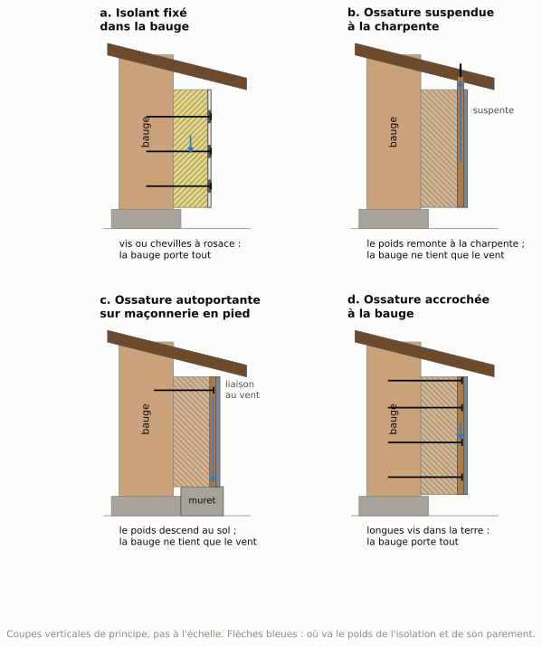
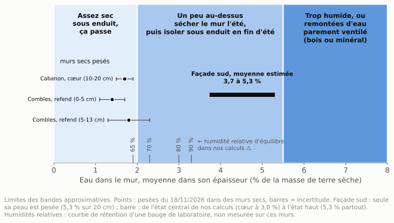

Données et code
Ce sujet est une synthèse : il ne publie pas de relevés propres. Il
s’appuie sur les mesures des sujets Vis dans la bauge et Humidité de la bauge, et
sur nos calculs d’humidité, non publiés à ce jour. Le
dossier ite-sur-la-terre/
du dépôt GitHub contient le code des figures. Texte et figures sous
licence CC BY 4.0 ; code sous licence MIT.
Le code
Python 3 avec matplotlib. Les figures sont des schémas de principe ; les seuls chiffres tracés (pesées publiées, correspondances teneur en eau / humidité relative de nos calculs) sont écrits dans le script avec leur source. Depuis la racine du dépôt :
python3 ite-sur-la-terre/code/figures_ite.py # les trois figures (français et anglais)
make construire # tout, plus ce siteLes figures



Citer
Rémi Cura (2026). ITE sur la terre. Dans : Rénover le bâti en terre crue : retours d’expérience, dépôt de données et de code, https://github.com/Remi-C/renovation-terre-crue. DOI : 10.5281/zenodo.24504812